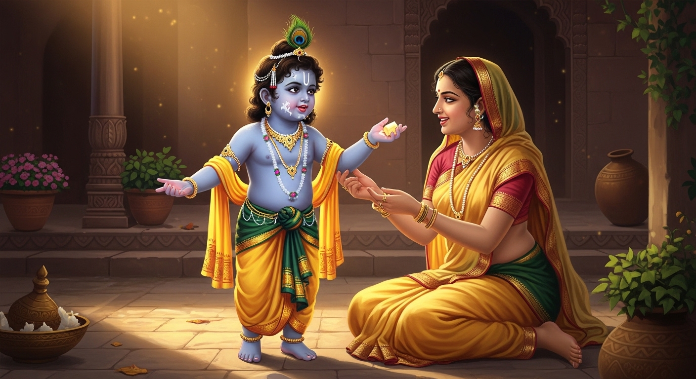
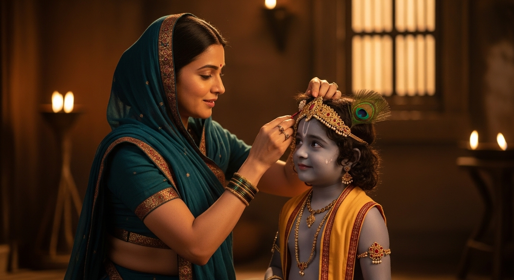

कवि: सूरदास
रस: वात्सल्य रस
भाषा: ब्रज भाषा
सारांश: भक्तिकाल के कृष्णभक्ति शाखा के सिरमौर कवि सूरदास जी द्वारा रचित इन पदों में भगवान श्रीकृष्ण की बाल-लीलाओं और माता यशोदा के वात्सल्य प्रेम का अत्यंत स्वाभाविक और हृदयस्पर्शी वर्णन किया गया है। पहले पद में माता यशोदा बालक कृष्ण को पालने में सुलाने का प्रयास कर रही हैं। दूसरे पद में श्रीकृष्ण के घुटनों के बल चलने, माखन खाने और तोतली बोली में बात करने जैसी मधुर बाल-चेष्टाओं का वर्णन है, जिसे देखकर माता यशोदा आनंदित होती हैं।
शब्दार्थ: हरि = भगवान श्रीकृष्ण; हलरावै = हिलाती है; मल्हावै = पुचकारती है; निंदरिया = नींद; बेगहिं = जल्दी; अधर = होंठ; सैन = इशारा; नँद-भामिनि = नंद जी की पत्नी (यशोदा)।
प्रसंग: इस पद में माता यशोदा अपने नन्हे पुत्र श्रीकृष्ण को पालने में सुलाने का प्रयास कर रही हैं।
भावार्थ: कवि सूरदास जी कहते हैं कि माता यशोदा बालक कृष्ण को पालने में झुला रही हैं। वे पालने को कभी हिलाती हैं, कृष्ण को पुचकारती हैं, प्यार करती हैं और जो मन में आता है, वह लोरी के रूप में गुनगुनाती हैं। वे नींद (निंदरिया) को बुलाते हुए कहती हैं कि "अरी नींद! तू आकर मेरे लाल को सुला क्यों नहीं देती? तू जल्दी से क्यों नहीं आती, देख तुझे मेरा कान्हा बुला रहा है।" माता की लोरी सुनकर बालक कृष्ण कभी अपनी आँखें बंद कर लेते हैं और कभी अपने होठों को फड़काने लगते हैं। जब माता यशोदा देखती हैं कि कृष्ण सो गए हैं, तो वे चुप हो जाती हैं और वहाँ उपस्थित अन्य गोपियों को भी इशारे (सैन) से शांत रहने को कहती हैं ताकि बच्चे की नींद न टूटे। इसी बीच कृष्ण अचानक व्याकुल होकर जाग उठते हैं, तो माता यशोदा फिर से मधुर स्वर में लोरी गाने लगती हैं। अंत में सूरदास जी कहते हैं कि जो आनंद और सुख बड़े-बड़े देवताओं (अमर) और मुनियों को भी दुर्लभ (कठिन) है, वही दिव्य वात्सल्य सुख आज माता यशोदा (नंद-भामिनी) को सहज ही प्राप्त हो रहा है।
शब्दार्थ: खीझत = झुँझलाते/चिढ़ते हुए; अरुन लोचन = लाल आँखें; जंभात = जम्हाई (उबासी) लेते हैं; रुनझुन = पायलों की आवाज़; घुटुरुनि = घुटनों के बल; धूरि धूसर = धूल से सना हुआ; गात = शरीर; अलक = बालों की लट; तोतर बोल = तोतली बोली; निमिष = एक पल के लिए भी।
प्रसंग: इस पद में नींद से जगे हुए बालक कृष्ण की बालसुलभ चेष्टाओं (चिढ़ना, रोना, माखन खाना) का मनोहारी चित्रण किया गया है।
भावार्थ: सूरदास जी कहते हैं कि बालक कृष्ण अभी-अभी नींद से जागे हैं। वे चिढ़ते और झुँझलाते (खीझते) हुए माखन खा रहे हैं। नींद के खुमार के कारण उनकी आँखें (लोचन) लाल हैं, भौंहें तिरछी हो रही हैं और वे बार-बार जम्हाई ले रहे हैं। कभी वे पैरों में बँधी पायलों की 'रुनझुन' आवाज़ करते हुए घुटनों के बल आँगन में चलने लगते हैं, जिससे उनका पूरा शरीर धूल से सन जाता है (धूरि धूसर गात)। कभी वे झुककर अपने ही बालों की लट (अलक) को खींच लेते हैं, जिससे उन्हें दर्द होता है और उनकी आँखों में आँसू भर आते हैं। कभी वे अपनी प्यारी सी तोतली बोली में कुछ बोलने लगते हैं और कभी नंद बाबा को 'तात' (पिता) कहकर पुकारते हैं। सूरदास जी कहते हैं कि भगवान श्रीकृष्ण की इस अद्भुत और मनमोहक बाल-छवि (शोभा) को देखकर माता यशोदा इतनी मुग्ध हो जाती हैं कि वे एक पल (निमिष) के लिए भी अपने पुत्र को आँखों से ओझल नहीं होने देना चाहतीं।
